Digital Europe
Do wealthier EU countries adopt more AI, cloud and digital skills? Five official Eurostat datasets, cleaned and combined in DuckDB, then tested with correlation analysis across all 27 member states.
27 EU countries
2023 to 2025
Eurostat
SQL · Python · GitHub
What does digitalisation look like by economy?
Organisations investing in digital transformation need to know how technology adoption differs between markets and how that relates to economic conditions. The analysis focuses on association rather than causation, to identify patterns worth investigating further.
GDP per capita in purchasing power standards (PPS) per inhabitant.
Enterprise adoption of artificial intelligence and paid cloud-computing services.
Individuals with at least basic digital skills, and ICT specialists as a share of employment.
Raw data in. Trusted tables out.
Data cleaning
Raw Eurostat TSV files are preserved separately. Variables were filtered to the EU-27 population and converted into structured CSV datasets.
Quality control
Missing values and Eurostat status flags were checked before the analytical datasets were produced. The final 2023 and 2025 indicators have no missing analytical values.
Derived metrics
2025 values, 2023 to 2025 changes and Pearson correlations were calculated from the cleaned data.
Average change, 2023 to 2025
| Indicator, 2025 | Highest | Lowest |
|---|---|---|
| GDP per capita (PPS) | Luxembourg, 99,621.3 | Bulgaria, 28,332.0 |
| AI adoption | Denmark, 42.03% | Romania, 5.21% |
| Cloud adoption | Finland, 79.21% | Bulgaria, 17.83% |
| Digital skills | Netherlands, 83.61% | Romania, 31.84% |
| ICT specialists | Sweden, 8.9% | Greece, 2.5% |
What the analysis shows
AI adoption increased substantially
Enterprise AI adoption rose by an average of 12.49 percentage points between 2023 and 2025 across the 27 countries.
Cloud adoption also expanded
Enterprise cloud adoption rose by an average of 5.72 percentage points, with large differences between countries.
Digital capability changed unevenly
Digital-skills prevalence rose by an average of 3.40 percentage points, with country changes differing substantially.
Wealth and tech move together
GDP per capita correlated positively with all four indicators in 2025. This is association, not causation.
GDP vs technology: Pearson r
The charts
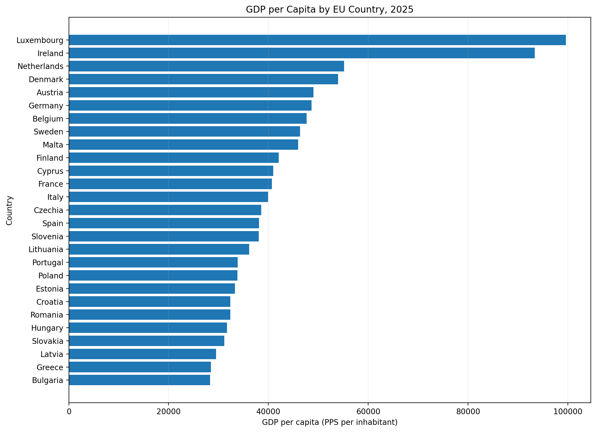
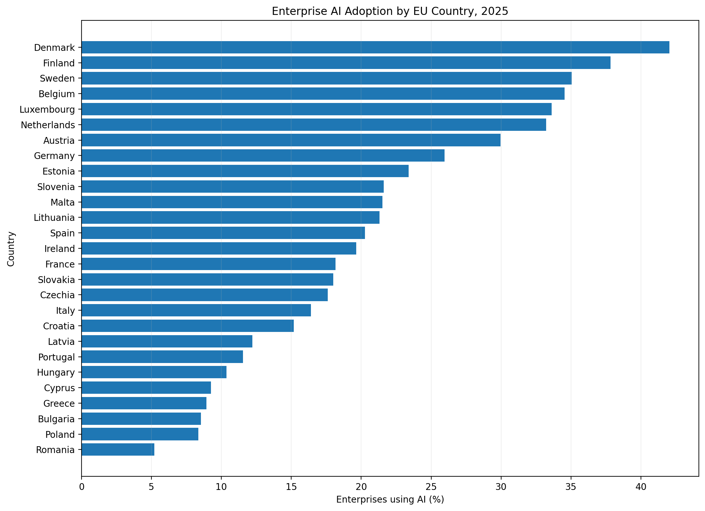
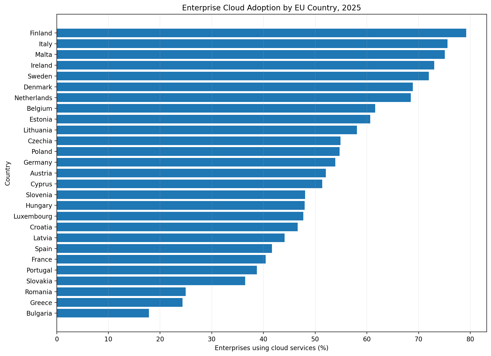
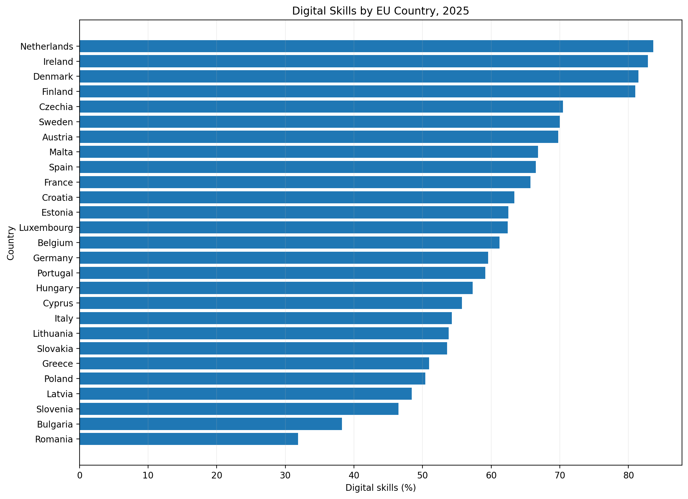
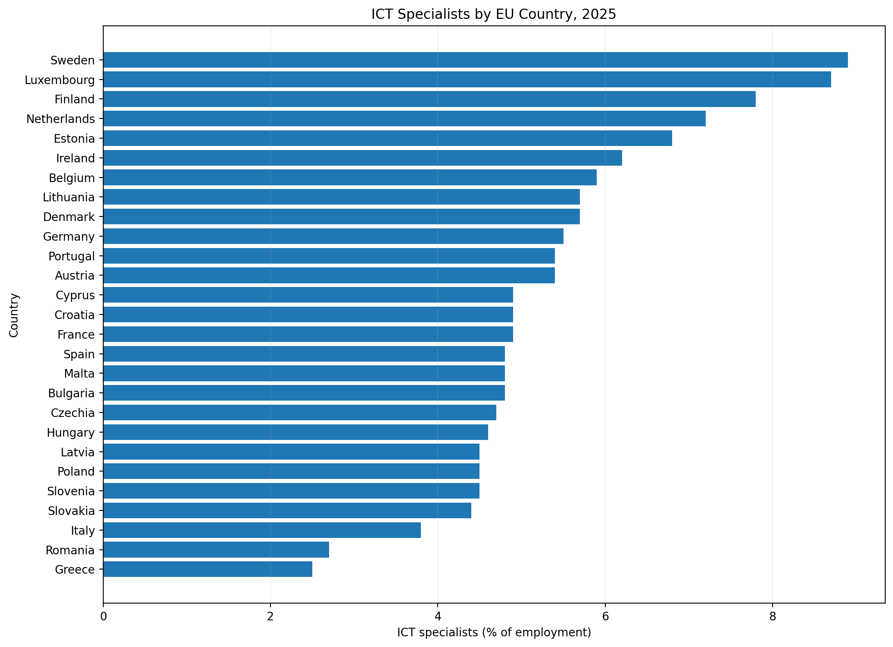
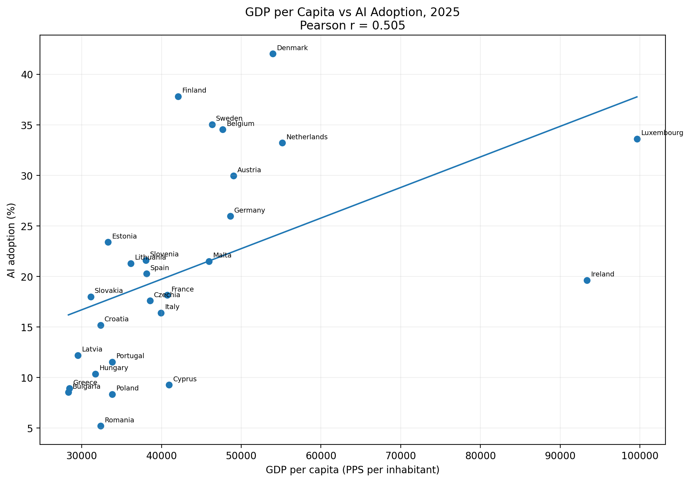
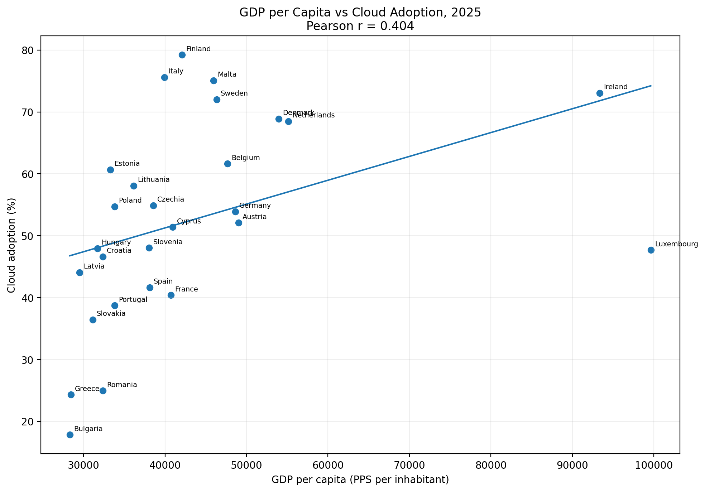
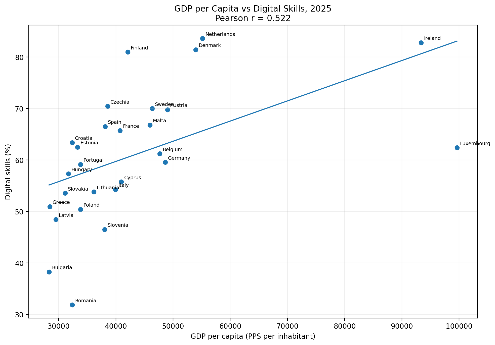
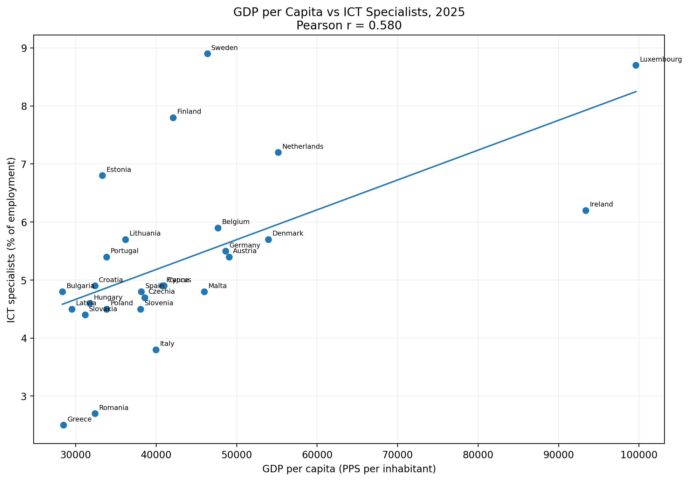
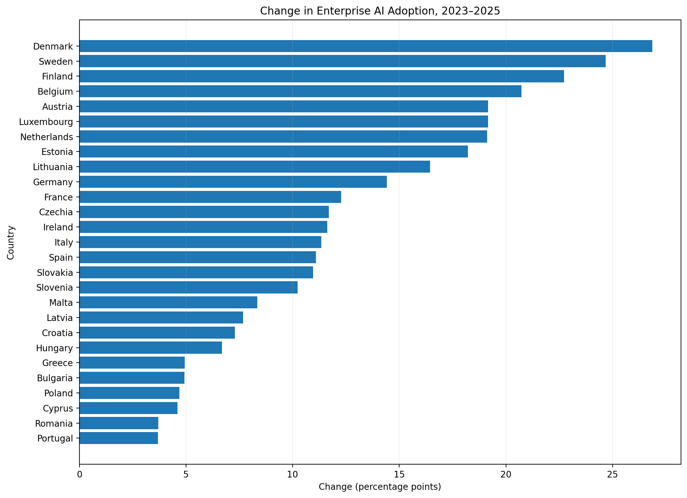
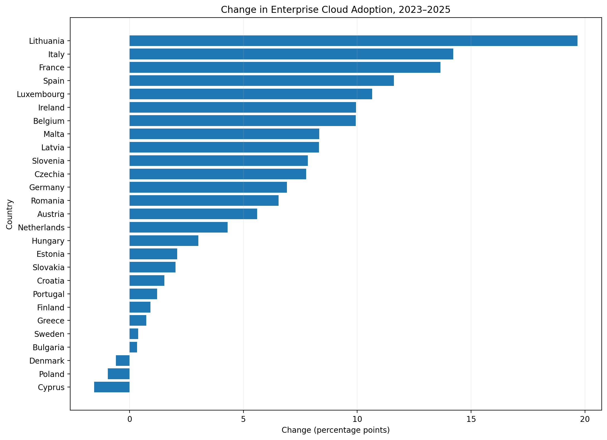
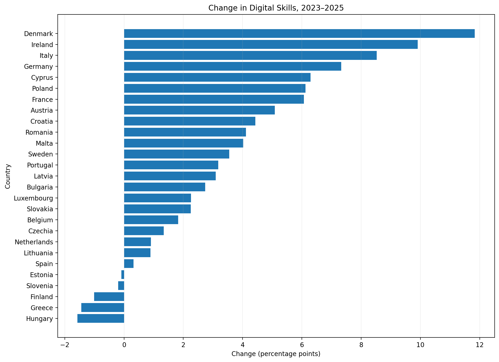
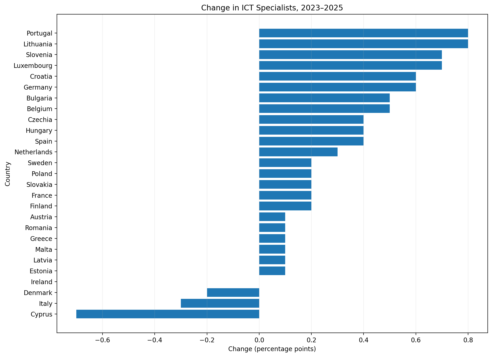